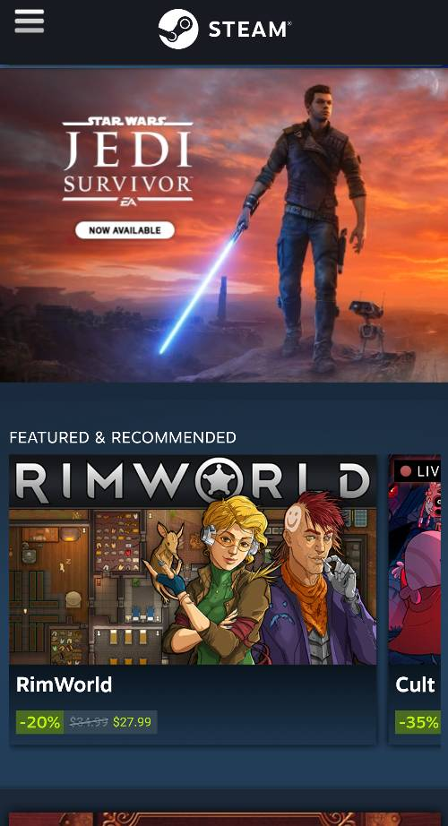
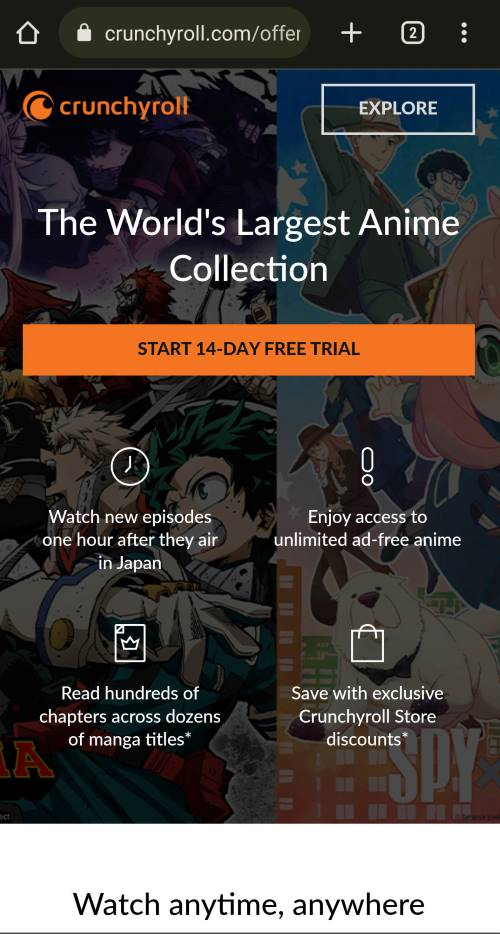

Contrast
Steam
store.steampowered.com The Steam mobile site provides a good example of contrast. The background is a dark color while the text and images are brighter and more colorful. This helps the user to read text and draws their eyes to the focus of the web page.
Hick's Law
Netflix
netflix.comThe Netflix mobile site provides an examples of Hick's Law. Hick's Law states that the more options given to a user, the longer it will take to decide on an option. Netflix gives just a few options on their front page which allows users to choose options more quickly.
Visual Hierarchy
Crunchyroll
crunchyroll.com The Crunchyroll mobile site is an example of visual hierarchy, which is the arrangement of elements to show their importance. On this site, the desciption of the site and the trial button are given a large and important appearance at the top of the page. Below that are desciptions of the site that are given less importance.